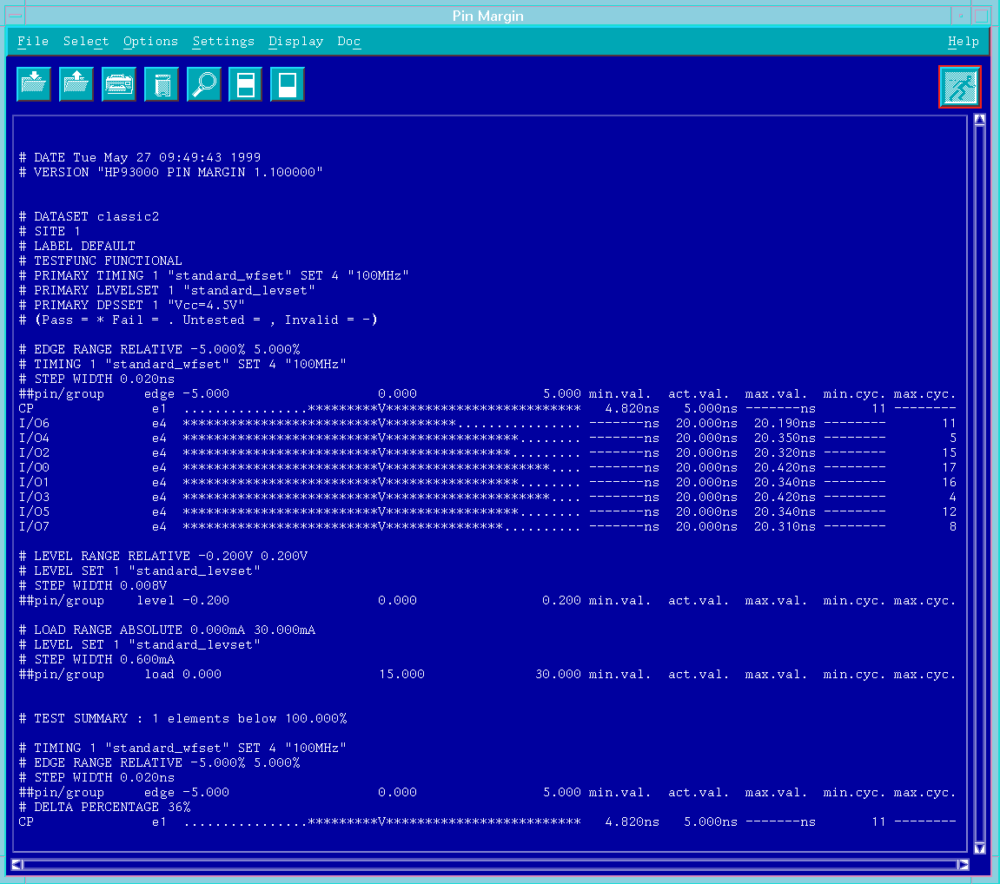

Results
The results of a pin margin test appear in the lowermost area of the main screen. These results are shown in the figure below.

Each line with results represents one pin margin test, where the individual pass/fail measurements can clearly be seen.
Collectively, these results are called the Test Report.
A detailed description of the Test Report syntax can be found in the section Syntax of the Pin Margin Test Report.
Note If you execute several pin margin tests the test report of the last executed
test will be appended after the other test reports. If you wish to view only the last test report
click Clear Report in the pulldown menu Options
before executing your margin test.